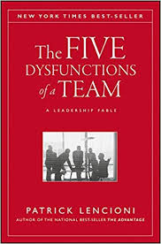

My Bookshelf
Here's what I'm reading:
|
I've started this and I'm excited to learn more about how the 3 steps of TDD lead to great software. |
 Continuous Integration and Continuous Delivery have been done in different ways at the companies I've worked. I look forward to reading through this one to see if there are best practices that can be followed for CD, no matter which technologies or tools are being used. |
I started this one back when I was working as ScrumMaster for one of the teams I was on. It was helpful as a primer on the different Scrum ceremonies and the different roles there are on a Scrum team. I definitely want to finish this one so I can help identify issues with Scrum teams I'm a part of in the future and help correct them. |
I/ve really enjoyed working through this one; I haven't finished it but it has a lot of good reference points for how clean code should look in general. Developers have varying opinions about clean code, but I think it's cool how this book attempts to set a baseline. |
This one has been fun to step through - I especially enjoy the quirky examples that accompany each pattern, and the different types of sections in the book (like Q&A's, interviews, diagrams) that help keep the content fresh and exciting. Maybe after I finish this I'll check out the Gang of Four book on Design Patterns. |
|
I haven't started this yet but it sounded like it would be a cool window into different types of software professions. |
This book has been helpful as I've gotten started learning Git, having come from an SVN background. I've preferred to use Git on the command line rather than using a tool like SourceTree, so having a reference like this is helpful. |
 I thought this was an interesting take on the common issues affecting teams both large and small, executive and non-executive - even though the account was fictional, the constructs surrounding team dysfunctions were very real and I could apply them mentally to teams I have been on in the past. |
I didn't have much of a formal financial education, so investing and money management has been a new concept for me. I've heard a lot about Benjamin Graham and his ideas about value investing, and how his ideas have stood the test of time. I intend to finish this one as soon as possible. |
Newswire
This is a space for me to log events that have occurred at companies I've worked.
Yodle / Web.com
- Jacksonville-based Web.com names Sharon Rowlands as new CEO
- Web.com shareholders decide on $2.24B sale
- Web.com to be acquired by Siris Capital in all cash deal valued at $2B
- Web.com announces acquisition of Acquisio
- Yodle sublets 56k SF at 330 W 34th St to Outcome Health
- Yodle: how a startup went from birth to buyout
- Yodle agrees to $342M takeover from Web.com
- Yodle expands in NYC
- Yodle sets up HQ at Vornado's 330 W 34th
- Yodle acquires Lighthouse practice management group
Sapient Government Services
- Publicis merges Sapient and Razorfish
- Publicis acquires digital giant Sapient for $3.7 billion
- Sapient expands Government Services with acquisition of OnPoint
The Bottom Line
This is a space for me to start studying company financials, so I can begin to learn a little more about the language of business.
| Name | Net Sales | Net Income | Basic EPS | Cash Dividends Declared Per Share | Total Cash, Cash Eq, Marketable Sec | Total Assets | Non-Current Portion of Term Debt | Other Non-Current Liabilities |
| Apple Inc. | 265,595 | 59,531 | 12.01 | 2.72 | 237,100 | 365,725 | 93,735 | 45,180 |
Copyright John T Kline 2019